Braccio articolato per aspirazione fumi e micropolveri di saldatura
Articulated arm for welding fume and fine dust extraction
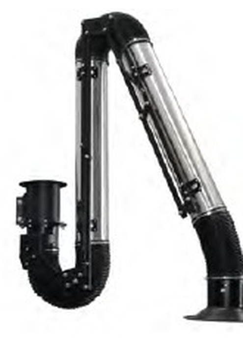
Il braccio TECHFLEX, grazie ai materiali utilizzati e all'innovativo progetto, permette all'operatore di poter contare su un'elevata manovrabilità, un posizionamento stabile e un'eccezionale robustezza, garantiti dalla struttura a pantografo che sostiene il braccio. Le versioni da parete possono essere dotate di un aspiratore centrifugo e di una mensola a parete per il collegamento alla tubazione dell'impianto fumi. Le versioni da banco o carrello sono dotate di un apposito tronchetto rotante 360°. Non adatto per polveri o liquidi.
Thanks to its materials and innovative design, the TECHFLEX arm offers high manoeuvrability, stable positioning and exceptional robustness, guaranteed by the pantograph structure supporting the arm. Wall versions can be fitted with a centrifugal fan and a wall bracket for connection to the fume system ducting. Bench or trolley versions have a dedicated 360° rotating stub. Not suitable for dusts or liquids.
Struttura portante esterna in acciaio rinforzato per garantire resistenza e solidità nel tempo. Tubo rigido in alluminio per un'elevata leggerezza. Pistoni a gas per un posizionamento stabile. Cappa di aspirazione ad alta efficienza di captazione per la massima efficienza di aspirazione, completa di serranda manuale per la taratura della portata, griglia anti intrusione e maniglia. Su richiesta è disponibile il kit di illuminazione a led per la cappa. Possibilità di abbinare due bracci tramite apposita mensola.
Reinforced steel external load-bearing structure for lasting strength. Rigid aluminium tube for light weight. Gas pistons for stable positioning. High-capture extraction hood with manual damper for flow adjustment, anti-intrusion grille and handle. LED lighting kit available on request. Two arms can be combined using a dedicated bracket.
TECHFLEX T
Braccio articolato adatto per aspirazione fumi ad alta temperatura (max. 280 °C).
Articulated arm for high-temperature fume extraction (max. 280 °C).
TECHFLEX ATEX
Braccio articolato idoneo per utilizzo in zona Atex CE Ex II 3GD 86 °C.
Articulated arm suitable for use in ATEX zone CE Ex II 3GD 86 °C.
È possibile ordinare i bracci articolati pre-montati: con un piccolo sovrappresso si ottimizza in questo modo il tempo di installazione.
Pre-assembled arms can be ordered: a small surcharge optimises installation time.
| Codice · Code | Diametro · Diameter (mm) | Lunghezza · Length (mm) | Portata · Flow (m³/h) | Perdita di carico media · Avg. pressure drop (Pa) |
|---|---|---|---|---|
| TECHFLEX 100/1 | 100 | 1200 | 400 - 600 | 650 |
| TECHFLEX 100/2 | 100 | 2000 | 400 - 600 | 850 |
| TECHFLEX 100/3 | 100 | 3000 | 400 - 600 | 850 |
| TECHFLEX 125/2 | 125 | 2000 | 700 - 1000 | 800 |
| TECHFLEX 125/3 | 125 | 3000 | 700 - 1000 | 800 |
| TECHFLEX 125/4 | 125 | 4000 | 700 - 1000 | 800 |
| TECHFLEX 160/2 | 160 | 2000 | 1000 - 1400 | 700 |
| TECHFLEX 160/3 | 160 | 3000 | 1000 - 1400 | 700 |
| TECHFLEX 160/4 | 160 | 4000 | 1000 - 1400 | 700 |
Modelli da banco/carrello · Bench/trolley models
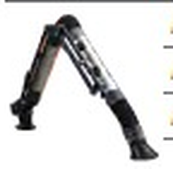
Ø 100 mm| Codice · Code | Descrizione · Description |
|---|---|
| TECHFLEX100120 | Braccio TECHFLEX da banco/carrello - Ø 100 mm - L. 1200 mm TECHFLEX bench/trolley arm - Ø 100 mm - L. 1200 mm |
| TECHFLEX100200 | Braccio TECHFLEX da banco/carrello - Ø 100 mm - L. 2000 mm TECHFLEX bench/trolley arm - Ø 100 mm - L. 2000 mm |
| TECHFLEX100300 | Braccio TECHFLEX da banco/carrello - Ø 100 mm - L. 3000 mm TECHFLEX bench/trolley arm - Ø 100 mm - L. 3000 mm |
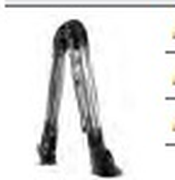
Ø 125 mm| Codice · Code | Descrizione · Description |
|---|---|
| TECHFLEX125200 | Braccio TECHFLEX da banco/carrello - Ø 125 mm - L. 2000 mm TECHFLEX bench/trolley arm - Ø 125 mm - L. 2000 mm |
| TECHFLEX125300 | Braccio TECHFLEX da banco/carrello - Ø 125 mm - L. 3000 mm TECHFLEX bench/trolley arm - Ø 125 mm - L. 3000 mm |
| TECHFLEX125400 | Braccio TECHFLEX da banco/carrello - Ø 125 mm - L. 4000 mm TECHFLEX bench/trolley arm - Ø 125 mm - L. 4000 mm |
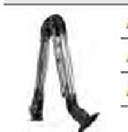
Ø 160 mm| Codice · Code | Descrizione · Description |
|---|---|
| TECHFLEX160200 | Braccio TECHFLEX da banco/carrello - Ø 160 mm - L. 2000 mm TECHFLEX bench/trolley arm - Ø 160 mm - L. 2000 mm |
| TECHFLEX160300 | Braccio TECHFLEX da banco/carrello - Ø 160 mm - L. 3000 mm TECHFLEX bench/trolley arm - Ø 160 mm - L. 3000 mm |
| TECHFLEX160400 | Braccio TECHFLEX da banco/carrello - Ø 160 mm - L. 4000 mm TECHFLEX bench/trolley arm - Ø 160 mm - L. 4000 mm |
Modelli da parete e mensole · Wall models and brackets
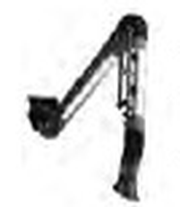
Ø 100 mm| Codice · Code | Descrizione · Description |
|---|---|
| TECHFLEX100121 | Braccio TECHFLEX da parete - Ø 100 mm - L. 1200 mm TECHFLEX wall arm - Ø 100 mm - L. 1200 mm |
| TECHFLEX100201 | Braccio TECHFLEX da parete - Ø 100 mm - L. 2000 mm TECHFLEX wall arm - Ø 100 mm - L. 2000 mm |
| TECHFLEX100301 | Braccio TECHFLEX da parete - Ø 100 mm - L. 3000 mm TECHFLEX wall arm - Ø 100 mm - L. 3000 mm |
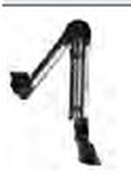
Ø 125 mm| Codice · Code | Descrizione · Description |
|---|---|
| TECHFLEX125201 | Braccio TECHFLEX da parete - Ø 125 mm - L. 2000 mm TECHFLEX wall arm - Ø 125 mm - L. 2000 mm |
| TECHFLEX125301 | Braccio TECHFLEX da parete - Ø 125 mm - L. 3000 mm TECHFLEX wall arm - Ø 125 mm - L. 3000 mm |
| TECHFLEX125401 | Braccio TECHFLEX da parete - Ø 125 mm - L. 4000 mm TECHFLEX wall arm - Ø 125 mm - L. 4000 mm |
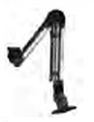
Ø 160 mm| Codice · Code | Descrizione · Description |
|---|---|
| TECHFLEX160201 | Braccio TECHFLEX da parete - Ø 160 mm - L. 2000 mm TECHFLEX wall arm - Ø 160 mm - L. 2000 mm |
| TECHFLEX160301 | Braccio TECHFLEX da parete - Ø 160 mm - L. 3000 mm TECHFLEX wall arm - Ø 160 mm - L. 3000 mm |
| TECHFLEX160401 | Braccio TECHFLEX da parete - Ø 160 mm - L. 4000 mm TECHFLEX wall arm - Ø 160 mm - L. 4000 mm |
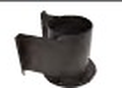
Mensole per impianti centralizzati| Codice · Code | Descrizione · Description |
|---|---|
| CWB02018000100 | Mensola per fissaggio a muro per connessione ad impianti centralizzati Ø 100 mm Wall bracket for connection to central systems Ø 100 mm |
| CWB02018000000 | Mensola per fissaggio a muro per connessione ad impianti centralizzati Ø 125-160 mm Wall bracket for connection to central systems Ø 125-160 mm |
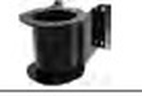
Mensola per ventilatore| Codice · Code | Descrizione · Description |
|---|---|
| CWB020180EV000 | Mensola per fissaggio a muro braccio articolato TECHFLEX Ø 125-160 mm per ventilatore EV Wall bracket for TECHFLEX articulated arm Ø 125-160 mm for EV fan |
Braccio articolato da parete per alte temperature · High-temperature wall-mounted articulated arm
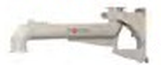
PAB1 prolunga a bandiera per bracci| Codice · Code | Descrizione · Description |
|---|---|
| PAB16000001000 | Prolunga a bandiera PAB 1 per braccio con predisposizione per aspiratore EV18 o collarino per tubazione flessibile Ø 160 mm - L. 1000 mm PAB 1 flag extension, prepared for EV18 fan or flexible-hose collar Ø 160 mm - L. 1000 mm |
| PAB16000002000 | Prolunga a bandiera PAB 1 per braccio con predisposizione per aspiratore EV18 o collarino per tubazione flessibile Ø 160 mm - L. 2000 mm PAB 1 flag extension, prepared for EV18 fan or flexible-hose collar Ø 160 mm - L. 2000 mm |
| PAB16000003000 | Prolunga a bandiera PAB 1 per braccio con predisposizione per aspiratore EV18 o collarino per tubazione flessibile Ø 160 mm - L. 3000 mm PAB 1 flag extension, prepared for EV18 fan or flexible-hose collar Ø 160 mm - L. 3000 mm |
| PAB16000004000 | Prolunga a bandiera PAB 1 per braccio con predisposizione per aspiratore EV18 o collarino per tubazione flessibile Ø 160 mm - L. 4000 mm PAB 1 flag extension, prepared for EV18 fan or flexible-hose collar Ø 160 mm - L. 4000 mm |
| PAB16000005000 | Prolunga a bandiera PAB 1 per braccio con predisposizione per aspiratore EV18 o collarino per tubazione flessibile Ø 160 mm - L. 5000 mm PAB 1 flag extension, prepared for EV18 fan or flexible-hose collar Ø 160 mm - L. 5000 mm |
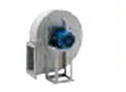
Aspiratore per gas ad alte temperature*| Codice · Code | Descrizione · Description |
|---|---|
| RP031020220TGC | Ventilatore RP 310/2 2.2KW 400V 50HZ - Versione gas caldi 300 °C - Per un braccio TECHFLEX T RP 310/2 fan, hot-gas version 300 °C - for one TECHFLEX T arm |
| RP035020300TGC | Ventilatore RP 350/2 3.0KW 400V 50HZ - Versione gas caldi 300 °C - Per due bracci TECHFLEX T RP 350/2 fan, hot-gas version 300 °C - for two TECHFLEX T arms |
* Altri modelli a richiesta · Other models on request
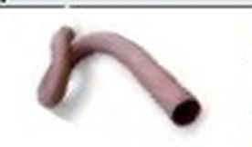
T36 tubo flessibile alta temperatura per TECHFLEX T| Codice · Code | Descrizione · Description |
|---|---|
| DBT36125045 | Tubazione flessibile T36 alta temperatura Ø 125 mm - L. 0,45 m T36 high-temperature flexible hose Ø 125 mm - L. 0,45 m |
| DBT36125090 | Tubazione flessibile T36 alta temperatura Ø 125 mm - L. 0,90 m T36 high-temperature flexible hose Ø 125 mm - L. 0,90 m |
| DBT36160045 | Tubazione flessibile T36 alta temperatura Ø 160 mm - L. 0,45 m T36 high-temperature flexible hose Ø 160 mm - L. 0,45 m |
| DBT36160090 | Tubazione flessibile T36 alta temperatura Ø 160 mm - L. 0,90 m T36 high-temperature flexible hose Ø 160 mm - L. 0,90 m |
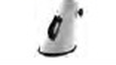
Cappe di aspirazione per TECHFLEX T| Codice · Code | Descrizione · Description |
|---|---|
| DBCAPPA125INOX | Cappa di aspirazione troncoconica in acciaio inox Ø 125 mm Stainless-steel conical extraction hood Ø 125 mm |
| DBCAPPA160INOX | Cappa di aspirazione troncoconica in acciaio inox Ø 160 mm Stainless-steel conical extraction hood Ø 160 mm |
Prolunga per bracci articolati di aspirazione · Extension for articulated extraction arms
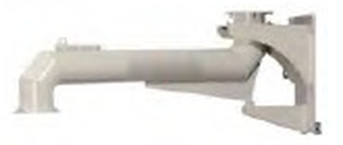
Le prolunghe della serie PAB grazie all'elevata robustezza sono la soluzione ideale per aumentare il raggio di azione dei bracci articolati nei Ø 125, 160 e 200 mm. Il giunto sulla staffa a parete consente una rotazione di 180° mentre quello centrale di 360° per un'elevata copertura dell'area di lavoro del braccio.
Thanks to their high robustness, PAB series extensions are the ideal solution for increasing the reach of articulated arms in Ø 125, 160 and 200 mm. The joint on the wall bracket allows 180° rotation, the central joint 360°, for wide coverage of the arm's work area.
Interamente costruite in acciaio verniciato di forte spessore, sono dotate di una mensola che permette una totale sicurezza e che può fare da sostegno per gli aspiratori della serie EV.
Built entirely in thick painted steel, fitted with a bracket for total safety that can also support EV series fans.
PAB 1: prolunga a bandiera per braccio con Ø 100-125-160: con predisposizione per aspiratore EV18 o collarino per tubazione flessibile.
Flag extension for arms Ø 100-125-160, prepared for EV18 fan or flexible-hose collar.
PAB 2: prolunga a bandiera per braccio con Ø 200 mm: con predisposizione per aspiratore EV30 o collarino per tubazione flessibile.
Flag extension for Ø 200 mm arms, prepared for EV30 fan or flexible-hose collar.
| Codice · Code | Diametro · Diameter (mm) | Lunghezza · Length (mm) | Portata · Flow (m³/h) | Perdita di carico · Pressure drop (Pa) | Peso totale · Weight (kg) |
|---|---|---|---|---|---|
| PAB16000001000 | 160 | 1000 | 1800 | 1000 | 35 |
| PAB16000002000 | 160 | 2000 | 1800 | 1000 | 39 |
| PAB16000003000 | 160 | 3000 | 1800 | 1000 | 44 |
| PAB16000004000 | 160 | 4000 | 1800 | 1000 | 49 |
| PAB16000005000 | 160 | 5000 | 1800 | 1000 | 54 |
| PAB20000001000 | 200 | 1000 | 2500 | 1000 | 43 |
| PAB20000002000 | 200 | 2000 | 2500 | 1000 | 49 |
| PAB20000003000 | 200 | 3000 | 2500 | 1000 | 56 |
| PAB20000004000 | 200 | 4000 | 2500 | 1000 | 62 |
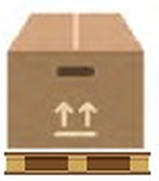
160×80×105 cm - PAB 160/3
Prolunga per bracci articolati di aspirazione · Modelli e accessori · Models and accessories
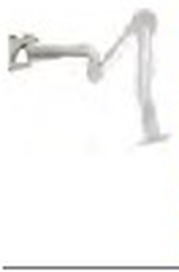
Ø 160 mm| Codice · Code | Descrizione · Description |
|---|---|
| PAB16000001000 | Prolunga per bracci articolati di aspirazione - Ø 160 mm - L. 1000 mm Extension for articulated extraction arms - Ø 160 mm - L. 1000 mm |
| PAB16000002000 | Prolunga per bracci articolati di aspirazione - Ø 160 mm - L. 2000 mm Extension for articulated extraction arms - Ø 160 mm - L. 2000 mm |
| PAB16000003000 | Prolunga per bracci articolati di aspirazione - Ø 160 mm - L. 3000 mm Extension for articulated extraction arms - Ø 160 mm - L. 3000 mm |
| PAB16000004000 | Prolunga per bracci articolati di aspirazione - Ø 160 mm - L. 4000 mm Extension for articulated extraction arms - Ø 160 mm - L. 4000 mm |
| PAB16000005000 | Prolunga per bracci articolati di aspirazione - Ø 160 mm - L. 5000 mm Extension for articulated extraction arms - Ø 160 mm - L. 5000 mm |
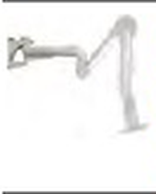
Ø 200 mm| Codice · Code | Descrizione · Description |
|---|---|
| PAB20000001000 | Prolunga per bracci articolati di aspirazione - Ø 200 mm - L. 1000 mm Extension for articulated extraction arms - Ø 200 mm - L. 1000 mm |
| PAB20000002000 | Prolunga per bracci articolati di aspirazione - Ø 200 mm - L. 2000 mm Extension for articulated extraction arms - Ø 200 mm - L. 2000 mm |
| PAB20000003000 | Prolunga per bracci articolati di aspirazione - Ø 200 mm - L. 3000 mm Extension for articulated extraction arms - Ø 200 mm - L. 3000 mm |
| PAB20000004000 | Prolunga per bracci articolati di aspirazione - Ø 200 mm - L. 4000 mm Extension for articulated extraction arms - Ø 200 mm - L. 4000 mm |
| Codice · Code | Descrizione · Description |
|---|---|
| COM00136 | Adattamento con collegamenti equipotenziali su PAB per braccio TECHFLEX ATEX Adaptation with equipotential connections on PAB for TECHFLEX ATEX arm |
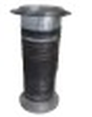
Kit collegamento per ICAP| Codice · Code | Descrizione · Description |
|---|---|
| ACCICAP200010 | Kit collegamento prolunga PAB su ICAP PAB extension connection kit on ICAP |
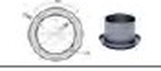
Collarino per innesto tubo flessibile Ø 160 mm su mensola| Codice · Code | Descrizione · Description |
|---|---|
| ACCIBS00000RF1 | Adattatore per innesto tubo flessibile Ø 160 mm su mensola Ø 160 mm Flexible-hose adapter Ø 160 mm on Ø 160 mm bracket |
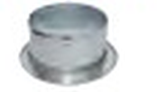
Adattatore per ULTRAFLEX Ø 200 mm| Codice · Code | Descrizione · Description |
|---|---|
| ACCIBS00000RF2 | Adattatore per innesto tubo flessibile Ø 200 mm su mensola Ø 200 mm Flexible-hose adapter Ø 200 mm on Ø 200 mm bracket |